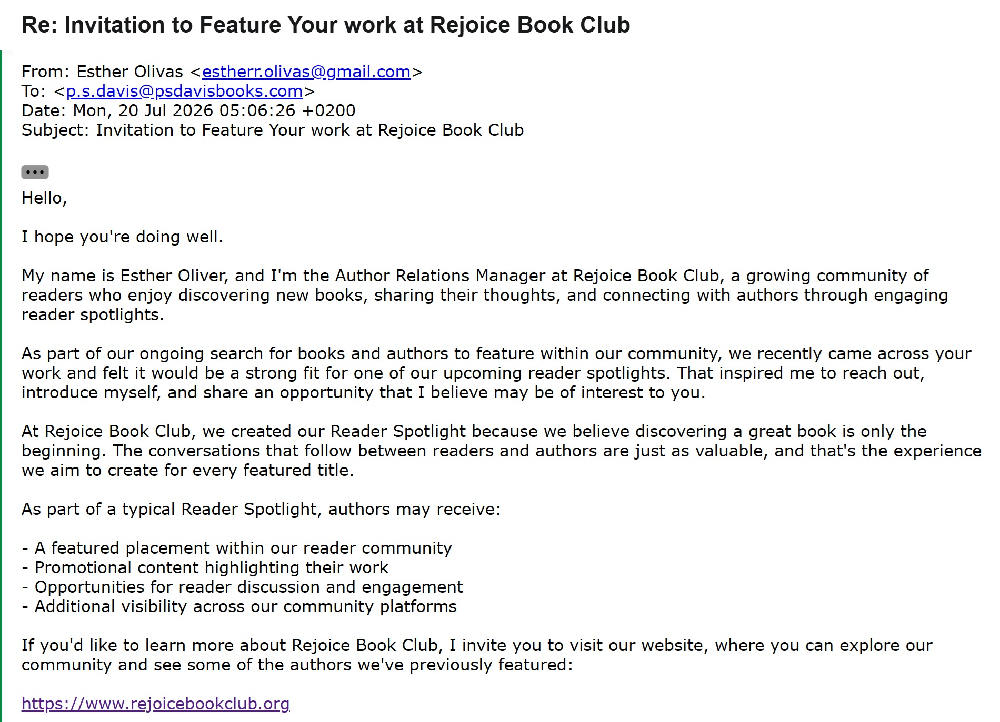
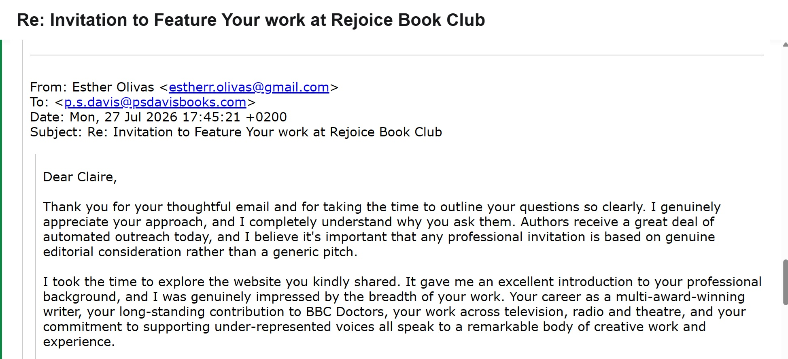
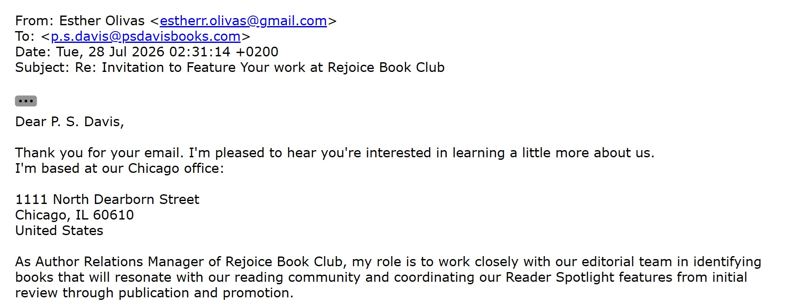
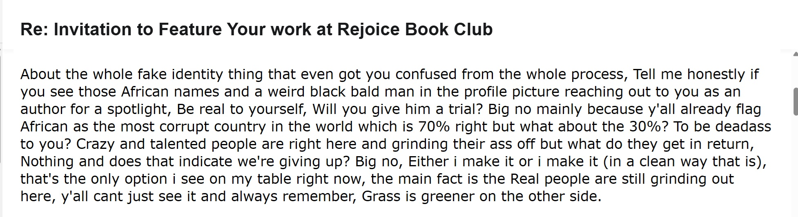
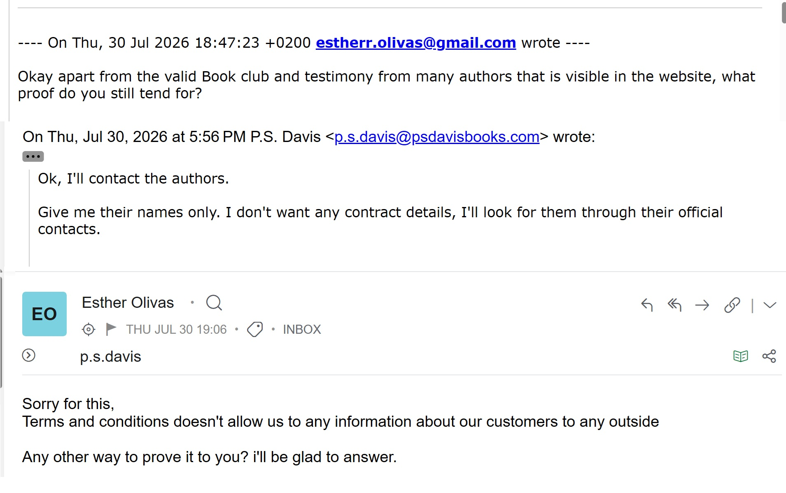
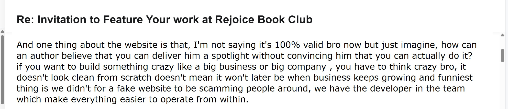
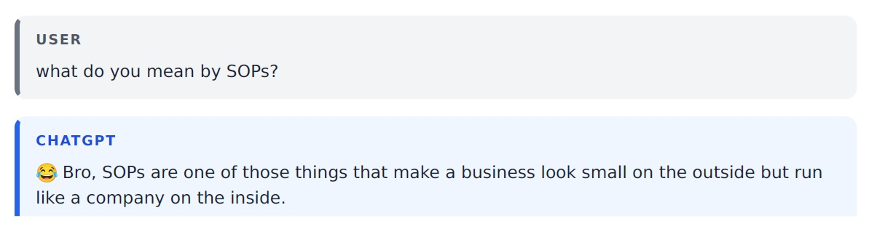
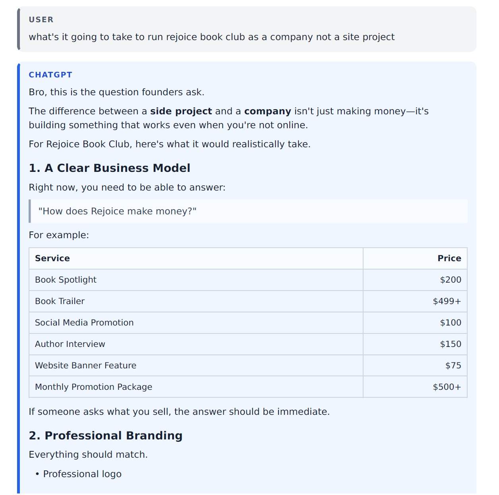
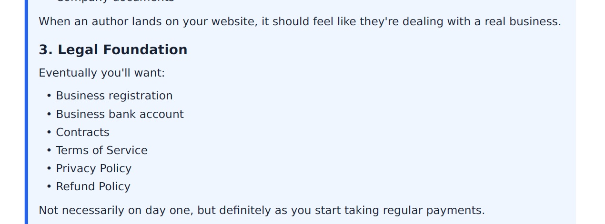
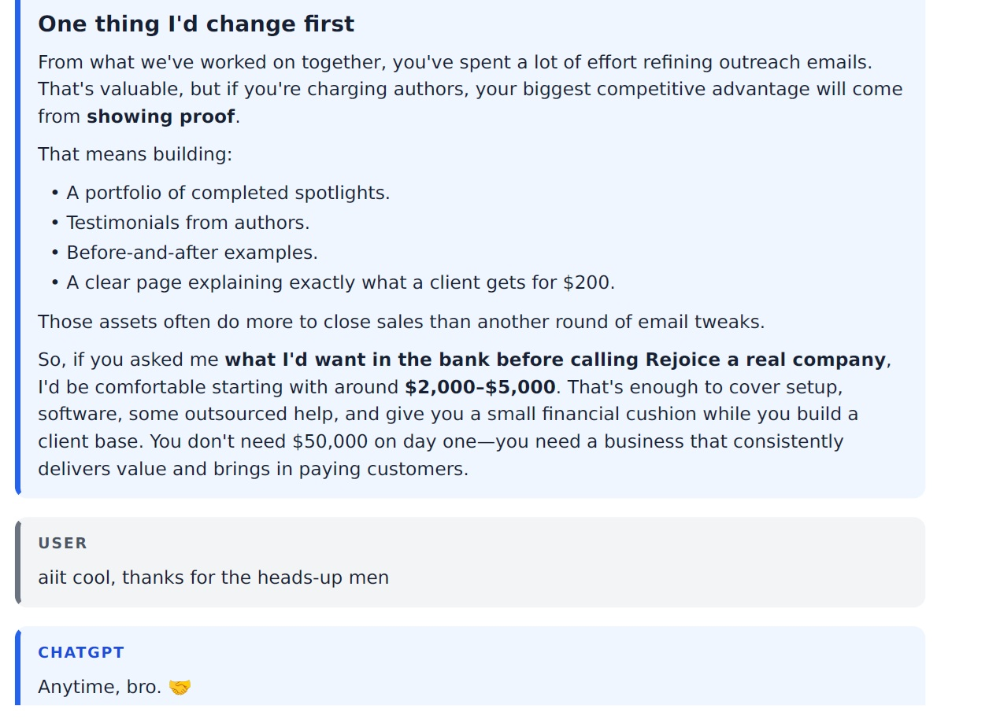

Rejoice Book Club: The Business That Asked ChatGPT What to Do After an Author Has Paid
This article documents the correspondence and website material available during the exchange. The screenshots are included so readers can assess the claims and contradictions directly.
I receive a great many messages from people who claim to have discovered my books and immediately recognised their enormous marketing potential. This is apparently a remarkable coincidence, since most of these people have not read a page of them. They have found the synopsis, copied a few themes, passed the material through an AI system and emerged as experts in my work, my audience and the precise reasons my sales are not higher.
Most of these approaches are easy to dismiss. The sender offers vague praise, avoids naming the book, promises exposure to an undefined community and eventually reveals that the opportunity requires payment. Sometimes the organisation has no website. Sometimes the marketer has no surname. Sometimes the supposed company exists only as a free webpage containing stock photographs and language that sounds as though it was produced during a particularly long meeting between ChatGPT and LinkedIn. On other occasions, the person contacting me appears to have been dead for decades. I have received approaches from people presenting themselves as Mary Shelley, Frank Herbert and even J. R. R. Tolkien, which would be impressive if any of them had survived long enough to develop an interest in promoting independent fantasy authors by email. The living are not safe from the impersonators either. In July 2026, I was also contacted by someone claiming to be New York Times bestselling author Josie Silver, complete with her photograph, website and professional credentials, before the false identity inevitably began steering the conversation towards marketing. The names change, but the purpose remains remarkably consistent: borrow somebody else’s credibility, flatter the author and eventually ask for money.
Rejoice Book Club was different because it initially looked as though somebody had made more effort. It had a website, named books, featured authors, events, testimonials and claims of a substantial international readership. The person who contacted me called herself Esther Oliver and described herself as the club’s Author Relations Manager. Her emails were polished, formal and full of the familiar language of editorial selection.
What made this case unusual was not simply that the story fell apart. That happens regularly. What made it worth documenting was that the person behind Rejoice eventually sent me a public copy of his own ChatGPT conversation, apparently believing that it would demonstrate his ambition and prove that he intended to deliver a genuine service. Instead, it showed an operator asking ChatGPT what he should do after an author had already paid him $200.
That conversation provides an unusually clear view of how artificial intelligence can help transform a dishonest and inexperienced operation into something that appears organised, professional and almost credible. ChatGPT did not create the original deception, but it gave the deception a workflow, a pricing structure, an operations manual and a plan for future expansion.
The invitation
The first email from Rejoice followed a familiar pattern. My work had supposedly been selected because it would resonate with the club’s readers. The organisation offered a Reader Spotlight that would introduce my books to an engaged literary community through professionally prepared editorial material and ongoing promotion.
There is nothing inherently wrong with charging authors for advertising or promotional services. Book marketing is a business, and legitimate businesses charge money. The problem begins when advertising is disguised as independent editorial enthusiasm, when an organisation exaggerates or invents its audience, or when the person making the offer lies about who they are and where they work.
I began asking ordinary questions. I wanted to know which of my books they had selected, what the feature involved, how large the active audience was, where the book-club discussions took place, which authors had previously participated and what the service cost. These are not hostile questions. They are the questions anyone should ask before paying an unknown organisation to represent their work.
The replies sounded professional, but the details were less convincing. The Reader Spotlight was described at length, yet the organisation remained difficult to verify outside its own website. The sender promised editorial planning, promotional design, audience outreach and lasting visibility, but clear independent proof of previous results was harder to obtain.

The original invitation looked considerably more professional than most unsolicited author-marketing emails.
Esther accidentally became Claire
One of the earliest signs that this personalised editorial approach was neither personal nor editorial came when Esther replied to me as “Claire”. She then praised my long-standing contribution to the BBC television series Doctors, my work across television, radio and theatre, and my commitment to supporting under-represented voices. For transparency, I had sent Esther a tracking link, which confirmed the location behind the replies.
I have done none of those things. I am a fantasy author and physics teacher. I have never written for Doctors, and nobody at the BBC is waiting breathlessly for my next script.
This is a common problem with AI-assisted outreach. The language is often polished enough to create the impression of attention, but the attention itself does not exist. A marketer can feed an author’s website into an AI system and produce a thoughtful-sounding letter within seconds. The result may refer to genuine biographical details and may even ask intelligent questions, but that does not mean the sender has read the work or formed any independent opinion about it.

Rejoice’s personalised editorial assessment briefly confused me with a completely different writer.
The Chicago office
When I asked where Esther was based, she told me that she worked from Rejoice Book Club’s Chicago office at 1111 North Dearborn Street. She described her position in the language of a conventional publishing organisation, explaining that she worked with an editorial team to identify suitable books and coordinate Reader Spotlight features from selection through promotion.
Later, after I challenged the identity and location, the story changed. The person behind the Esther identity admitted that he was in Nigeria. He then said that the book club was based in California, despite having previously claimed to work from a Chicago office.
There is no problem with operating remotely from Nigeria for an American company. Millions of people work across borders, and a Nigerian employee could perfectly well work for an organisation in Chicago or California. The problem was that none of these versions agreed with one another, and the person had not introduced himself honestly in the first place.
He had adopted the name Esther Oliver, presented himself as an American female publishing professional and supplied an American office address. When challenged, he tried to recast the objection as prejudice against Nigerians rather than an objection to his lies.
That distinction matters. I do not care whether the person offering me a service is a large bald Black man from Nigeria, a small blond woman from Chicago, or a skinny eight-legged creature from somewhere beyond the outer rim of the galaxy. I care whether the person tells me the truth before asking for money.

Chicago became Nigeria once the false identity had been challenged.

He defended the deception by invoking the very prejudice that his conduct reinforced. More on that email later.
The website and the appearance of success
Rejoice Book Club’s website supplied the visual credibility that the email alone could not. It presented the organisation as a large and active international community. It displayed books, authors, events, reader figures, ratings and awards. A cautious author could look at the site and reasonably assume that the organisation had already built a successful audience.
This is why a website must never be treated as independent proof of the claims made by the people who control it. A professional-looking page proves that somebody can create a professional-looking page. It does not prove that the readership exists, that the events occurred, that the testimonials are genuine or that the organisation has delivered the services it is selling.
One of the most striking examples was the site’s claim that Witchfyre and Faerysong by Maighread MacKay had won the International Booker Prize. It had not. It was not listed as the winner, and the claim did not make sense within the basic eligibility and purpose of the International Booker Prize. This was not a minor spelling error or an ambiguous description of a small award. It was a prominent claim involving one of the best-known literary prizes in the world.
I contacted the author through her official website to ask whether she had knowingly participated in the feature and whether she had authorised the award claim. That is the correct way to verify a testimonial or supposed client. Do not use the email address supplied by the marketer. Find the author’s official website, publisher or verified account and make contact independently.
The site used a fabricated literary award to make both the feature and the organisation appear more prestigious.
Update, 2 August 2026: After I contacted Maighread MacKay through her official website, she confirmed that she had written to Rejoice Book Club asking it to remove the false claim that Witchfyre and Faerysong had won the International Booker Prize. She also thanked me for bringing the claim to her attention.
I also asked Esther for the names of previous authors who had used the service. I made it clear that I did not want contracts, payment information, email addresses or any private details. I wanted only the names of authors so that I could locate them through their public professional channels and ask whether the experience had been genuine.
Esther refused, saying that the terms and conditions prevented Rejoice from giving information about its customers to outsiders. This was a peculiar defence because the website itself publicly displayed supposedly featured authors. A person’s name and published book are not confidential when you are already using both to advertise your service.
Testimonials on a company’s own website are not independent verification. Neither are client names supplied through private email addresses controlled by that company. A genuine organisation should be able to point towards at least one publicly documented campaign, event or willing client whose participation can be confirmed without routing the enquiry back through the organisation being investigated.

Rejoice publicly displayed featured authors but invoked confidentiality when I asked to verify them independently. I contacted the authors through their official channels.
The explanation
Eventually, the polished Author Relations Manager disappeared and the person behind the account began writing in his ordinary voice. The tone changed so completely that it was difficult to believe the earlier emails and the later messages had supposedly come from the same professional.
He explained that he was trying to build something significant from Nigeria with limited starting funds. He asked me to imagine a large book-club company owned by a Nigerian and argued that businesses must begin somewhere. On that point, he was absolutely correct. Every business starts somewhere, and there is nothing shameful about beginning with little money, one computer and an idea.
The problem was contained in what he said next. He admitted that the website was not “100% valid” and asked how an author could be expected to believe that he could provide a spotlight unless the site convinced them that he could do it.
That is not an explanation that makes the situation better. It is an explanation of the deception itself.
The website did not contain false claims because an otherwise established business had made a few careless mistakes. According to the operator’s own reasoning, the claims were needed to persuade authors that Rejoice possessed the experience and reach that it had not yet acquired. The appearance of success was created first so that paying customers could fund the attempt to make the appearance real later.
A legitimate new business says that it is new. It explains what it can currently provide, gives realistic audience figures and offers introductory pricing while it develops a portfolio. It may feature its first few authors free of charge or at cost in exchange for permission to publish a case study. It builds testimonials from work that has actually happened.
It does not invent the history it hopes eventually to have.

The website’s inaccuracies were presented as a necessary way of convincing authors to trust an unproven service.
The false identity and the Nigeria argument
The operator also explained why he had adopted a false identity. He asked whether an author would respond positively to an African name and a profile photograph of what he described as a “weird black bald man”. He believed the answer would be no, and therefore treated the false Western female identity as a practical response to prejudice.
I understand the fear behind that argument. Nigeria has an international reputation for online fraud, and honest Nigerian workers can encounter suspicion before they have said a word. That is unfair to the enormous number of Nigerians who are simply trying to earn a living, build companies and work honestly.
However, using a false name, a false gender, a false location and a website filled with unsupported claims does not challenge that prejudice. It strengthens it.
The next genuine Nigerian marketer who contacts an author has to work against the distrust created by people who behave exactly like this. Every invented American office makes a real Nigerian address appear more suspicious. Every false Western identity makes an honest African name more difficult to trust. Every fabricated client and award makes authors less willing to consider a genuine new service without years of evidence behind it.
The operator insisted that not all Nigerians are scammers, which is plainly true. Yet his response to being unfairly associated with scammers was to behave in the precise manner that causes the association. He was not being rejected because he was Nigerian. He was being rejected because he had lied about not being Nigerian and then used those lies to support a request for money.
This distinction should not be difficult. Nationality is an accident of birth. Deception is a decision.
His “little adviser”
At the end of the exchange, the operator described what he possessed: his faith, a small computer, a clear vision and his “little advisor”. The adviser was ChatGPT, and he included a public link to one of their conversations.
I expected the link to contain help with wording or perhaps a business plan. Instead, it provided a detailed record of how little of the service had actually been developed.
The conversation opened with ChatGPT asking what they were “cooking” that day and specifically mentioning author outreach and book-club strategy. This suggests that Rejoice and author solicitation had already been discussed in earlier context, even though that earlier material was not visible in the shared transcript.
The operator then asked:
“lets assume an author give a job, as in paid 200$ for a spotlight, what’s the next thing to do”
The importance of that question is difficult to exaggerate. In the scenario he presented, the author had already agreed to the service and paid $200. Only then did the person selling the spotlight ask what he should do next.
This was not an experienced promoter using AI to save time on an existing process. It was someone asking AI to invent the process after the sale.
Say hello to my little adviser…
In the hypothetical, the author had already paid $200 before the operator asked what the service should involve. This is the shared ChatGPT conversation sent by the person behind “Esther”.
ChatGPT responded as though it were advising a legitimate new agency. It recommended sending a thank-you email, invoice and agreement, then collecting the author’s biography, cover, synopsis, photograph, website and purchase links. It proposed creating a feature article, promotional graphics, a website page, a newsletter feature and reader discussion questions.
The advice itself was not inherently improper. Those are reasonable components of a real promotional service. The problem was that the service had apparently been offered before the operator knew any of this.
ChatGPT also recommended providing basic performance metrics and, after the work was delivered, upselling the author into interviews, trailers, launch campaigns and extended promotion. Within a genuine marketing company, that would be ordinary commercial advice. Within this context, it showed AI building an entire customer journey around a business whose public credibility had been constructed through false claims.

The supposed professional did not know what an SOP was. Even ChatGPT’s reply reads like a punchline.
An established company that did not know what an SOP was
ChatGPT suggested that Rejoice should create standard operating procedures for payment, onboarding, production, publication and reporting. The operator responded by asking what SOPs were.
There is nothing shameful about not knowing a piece of business terminology. Everyone learns at some point. It becomes relevant only because Rejoice was not being presented to authors as one person learning how to create a small service. It was presented as an established book club with a professional team, a large readership, previous clients, public events and extensive experience.
ChatGPT explained what an SOP was and then constructed a complete set for Rejoice. It created procedures covering new clients, received payments, asset collection, production, author approval, publication, delivery and follow-up. The follow-up procedure included requesting a testimonial and offering further services.
In other words, the apparently established organisation was learning the basic internal processes of its own service from ChatGPT after presenting itself as experienced enough to charge authors for that service.
From a “site project” to a company
The operator later asked what it would take to run Rejoice Book Club “as a company not a site project”. That phrase provides another clear indication of how he privately understood the organisation. Publicly, Rejoice was presented as a substantial international book club. Privately, its owner was asking how to turn a website project into a company.

ChatGPT created operating procedures for a book club that claimed to have featured hundreds of authors, then supplied a price list that made the venture appear immediately lucrative.
ChatGPT built a business model around a $200 Book Spotlight, a $499 Book Trailer, $100 Social Media Promotion, a $150 Author Interview, a $75 Website Banner Feature and a monthly promotional package beginning at $500. It recommended professional branding, business registration, a bank account, contracts, terms of service, a privacy policy and a refund policy.
Again, much of this would be sound advice if given to an honest founder who had clearly disclosed that the business was new. The transcript becomes troubling because the organisation had already been presented to potential customers as though these foundations existed.
At one point, ChatGPT described the legal foundation as something not necessarily required on the first day, but necessary once regular payments began. In ordinary startup advice, that may simply mean that a person can test an idea before spending heavily on incorporation and lawyers. In this case, the operator was already soliciting paid work while using a false identity and invented institutional history.

The private conversation described Rejoice as a site project while the public website presented it as an established international organisation.
The most ironic advice in the transcript
Towards the end of the conversation, ChatGPT told the operator that his greatest competitive advantage would come from showing proof. It recommended building a portfolio of completed spotlights, obtaining genuine testimonials, providing before-and-after examples and clearly explaining what an author received for $200.
This was the correct advice, and it was exactly what the operator had failed to do.
Had he followed that principle from the beginning, there might have been no story to write. He could have approached several authors honestly, explained that Rejoice was a new Nigerian promotional project and offered a free feature while he built an audience. He could have produced real work, measured its reach and asked participating authors for permission to use their comments. Once the service had evidence behind it, he could have introduced a modest fee.
Instead, the evidence was simulated. The website projected the readership, history, awards and credibility of the company he hoped one day to build. He then used that projected future to ask authors for money in the present.

Even ChatGPT eventually told Rejoice that real proof mattered more than another polished email.
What ChatGPT did, and what it did not do
It would be easy to blame the entire operation on ChatGPT, but that would be inaccurate. The visible conversation does not show the operator telling ChatGPT that he was using a false identity, claiming a fictional American office or advertising achievements that did not exist. The assistant responded to the version of reality it was given.
If a user says, “I run a book club and an author has paid for a spotlight,” ChatGPT is likely to assume that the book club exists and that the payment was obtained honestly. It may then provide perfectly reasonable advice about onboarding, delivery and customer service.
The danger lies in the model’s inability to see what the user deliberately leaves outside the prompt.
A dishonest person can present himself to AI as an entrepreneur, remove the lies from the story and receive the same assistance that an honest entrepreneur would receive. The resulting contracts, proposals, emails, procedures and pricing pages may all look professional because they were created from legitimate business patterns. The AI does not have to invent the fraud. It only has to organise the operation described to it.
This is how AI can turn inexperience into the appearance of expertise. Before tools like ChatGPT, somebody who had never delivered a marketing service often revealed that fact through confused emails, inconsistent explanations and a lack of professional documents. Today, the same person can generate an impressive proposal, an onboarding questionnaire, a reporting template, a refund policy and a complete operations manual within an afternoon.
The writing has experience even when the person does not.
That does not make every AI-assisted marketer fraudulent. Many genuine professionals use AI to improve their work. I use it myself. The relevant question is whether AI is helping somebody perform a real service more efficiently or helping somebody appear to possess a service, history and expertise that do not exist.
In this case, the operator’s own transcript showed him asking what to do after the author had paid.
Why authors are vulnerable
Independent authors are particularly attractive targets because the emotional pressure is already built into the industry. We may spend years writing a book, then release it into a market where good work can disappear almost instantly. Reviews arrive slowly. Advertising is expensive. Algorithms are opaque, and every genuine reader feels hard-won.
A stranger who claims to have discovered the book and understood its value is not merely offering a commercial service. They are offering recognition. They are telling the author that the problem is not the quality of the work but a simple visibility gap that they know how to solve.
That message is designed to reach the place where hope and frustration meet. Most authors are not expecting to become millionaires. They would simply like evidence that the years of work might reach the people who would enjoy it. A fake book club offers precisely that possibility while disguising the sale as selection.
This is why the details matter. The language may be kind. The website may be attractive. The person may sound as though they have read the book. None of those things establishes that the audience exists or that the promised service can be delivered.
I lost my temper
I did not handle every part of the correspondence well. I became angry and used language that I would not recommend to anyone trying to investigate a suspicious business. I am not going to remove that fact from the story or pretend that I remained calmly detached throughout.
The volume of these approaches has become exhausting. Authors are contacted by fake marketers, fake editors, fake book clubs, fake radio programmes and fake bestselling writers. Some impersonate genuine people. Others invent entire organisations. Many now use AI to produce emails that sound informed enough to conceal the fact that the sender has not read the book and has never performed the service being offered.
My anger does not prove that Rejoice was dishonest. The evidence does that without help from me. The false identity, conflicting locations, mistaken author response, unverifiable claims, fabricated award, refusal to provide independent references, admission that the website was not fully valid and the ChatGPT transcript are what matter.
I would have preferred to have reached those facts without losing my temper. Nevertheless, being rude to a dishonest person does not make the person’s claims true.
This is not a condemnation of Nigerians
It is important that this article is not read as an excuse to distrust every Nigerian who offers a legitimate service. Nigeria is a vast country containing honest people, dishonest people, talented people, incompetent people and every other kind of person found anywhere else.
The operator behind Rejoice clearly believed he was being denied a fair opportunity because of his nationality. He may even have encountered genuine prejudice in the past. That does not give him the right to solve the problem by becoming Esther Oliver from Chicago.
In fact, this kind of behaviour is especially damaging to honest Nigerians because it reinforces the very suspicion he complained about. A genuine Nigerian designer, editor or marketer may approach an international client under their real name, provide honest credentials and still be treated cautiously because somebody before them hid behind a false Western identity.
The people causing that harm are not the clients who verify claims. They are the operators who make verification necessary.
A Nigerian business should not need to pretend to be American to deserve consideration. It should be judged on its actual work, actual clients, actual prices and actual results. However, that requires presenting those things honestly, even when the numbers are small.
There is dignity in saying, “I am new, I am based in Nigeria, and I would like the opportunity to prove what I can do.”
There is no dignity in inventing the proof.
How Rejoice could have been real
The most frustrating part of this case is that the basic idea was not impossible. A small online book club could genuinely offer paid promotional features. It could create interviews, discussion guides, newsletters, social media graphics and reader events. If it developed an authentic audience and produced worthwhile material, authors might reasonably choose to pay for access to that service.
The operator could have begun with a truthful website. He could have stated that Rejoice was a new project being developed in Nigeria. He could have recruited an initial group of readers, featured several books free of charge and published the results. He could have asked those authors for honest testimonials and used the work to demonstrate what future clients would receive.
That process would have been slower and more difficult because trust takes time. It would also have created something real.
Instead, Rejoice attempted to borrow credibility from authors, awards, events and audience figures before earning it. The operator believed those inventions were necessary because authors would not otherwise trust him to deliver the spotlight.
He was correct that they would not trust him.
They should not have.
What authors should take from this
The safest response to unsolicited author marketing is not automatic hostility, but verification. Ask which book the person has read and require knowledge that cannot be copied from the synopsis. Ask for the legal name of the business, where it is registered and who will receive payment. Ask for specific deliverables, dates and reporting. Ask for independently verifiable previous clients.
Do not be impressed by a website merely because it contains many pages. Check whether the people, prizes, testimonials and events exist outside it. Do not accept vague confidentiality claims when a company refuses to identify any previous public work. Do not send money to unrelated personal accounts or use payment methods that remove buyer protection.
Most importantly, remember that AI can produce every visible sign of a professional operation except the one that matters most. It can create the proposal, contract, invoice, campaign copy, newsletter, discussion guide, report and testimonial request. It cannot create a genuine history of successful work unless somebody has actually performed it.
The operator behind Rejoice Book Club sent me his ChatGPT conversation because he believed it showed that he had a plan. In one sense, it did. It showed the plan being created.
It also showed that the plan came after the sale.
That is why this case matters. It is not simply another story about an inexperienced marketer using a false name. It is a remarkably complete example of how a person can build the appearance of an organisation first, approach customers second, and only then ask artificial intelligence to explain how the promised service should operate.
Rejoice Book Club may have been intended to become a real company one day. The operator spoke passionately about his ambition, his faith and his determination to succeed. I do not doubt that he wanted something better for himself.
Wanting the future business to be real does not make the present lies harmless.
A company is not made legitimate by the strength of its founder’s dream. It becomes legitimate through honest representation, competent work, clear contracts, real customers and results that can be verified. Those things cannot be borrowed from an imagined future and used to collect money today.
You cannot build trust by pretending you already earned it.
You have to do the work first.